그래프로 공정 상태 이해하기
오늘의 질문: "그림으로 미리 본 패턴을, 코드로 그대로 재현할 수 있을까?"
학습 목표
- 선·막대·히스토그램·산점도·박스플롯이 각각 어떤 질문에 답하는 그래프인지 고를 수 있다.
- 아이스크림 가게 기록(쉬운 예제)으로 그려 본 그래프 코드를, 표 이름과 열 이름만 바꿔 반도체 데이터에 적용할 수 있다.
- 그래프를 읽고, 평균 하나로는 놓치는 것(퍼짐, 시간에 따른 변화)을 한 문장으로 말할 수 있다.
- Orange3로 먼저 본 그림을 Matplotlib 코드로 다시 그려, 같은 결론이 나오는지 확인할 수 있다.
선수 지식: 4차시(열 선택·조건 검색), 5차시(describe())
왜 이걸 배워야 할까?
| 설비 | 기록 수 | 평균 온도 |
|---|---|---|
| EQ-01 | 47건 | 302.8℃ |
| EQ-02 | 37건 | 303.7℃ |
| EQ-03 | 46건 | 302.2℃ |
| EQ-04 | 50건 | 302.7℃ |
- 평균만 보면 네 설비가 302~304℃로 거의 같다. 그런데 박스플롯으로 그리면 EQ-02만 293.7~314.7℃로 길게 퍼져 있고, 학습용 정상 범위(295~305℃) 밖 기록도 37건 중 14건(약 38%)이다(다른 설비 약 18~21%).
- 평균이 같은 출근길 두 개도 매일 28~32분인 길과 15~50분인 길은 다르다. 숫자 요약은 "얼마인가", 그래프는 "어떤 모양인가"를 알려준다.
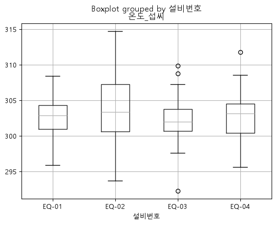
같은 데이터를 박스플롯으로 그린 결과(노트북 11단계).
지난 시간 복습
- 4차시
df["열 이름"],df[조건]/ 5차시describe()로 숫자 요약. - 오늘은 그것을 그림으로 본다. 그래프 대부분은 열 두 개를 함께 놓고 그린다(1차시 "여러 열 함께 보기").
오늘 쓰는 표 두 개
① 쉬운 예제 ice — 아이스크림 가게 3주 기록(week06_easy_icecream_daily.csv, 21행).
생활 예제용 가상 데이터다.
| 열 이름 | 뜻 |
|---|---|
날짜 | 기록한 날(2024-06-03 ~ 06-23) |
요일 | 월~일 |
날씨 | 맑음·흐림·비 |
최고기온_섭씨 | 그날 최고기온 |
판매량_개 | 그날 판 아이스크림 개수 |
② 반도체 데이터 df — 공정 기록(week06_process_visualization.csv, 180행). 교육용 가상 데이터다.
| 열 이름 | 공장에서 뜻하는 것 |
|---|---|
측정시간 | 기록이 남은 날짜와 시각(2024-03-01 ~ 2024-04-27) |
로트번호 | 함께 이동하는 웨이퍼 묶음(상자)의 번호 |
설비번호 | 작업을 한 기계(EQ-01 ~ EQ-04, 4대) |
공정명 | 어떤 작업이었는지(산화·포토·식각·증착·세정) |
온도_섭씨 | 설비 안 작업 공간(챔버)의 온도 |
압력_Pa | 챔버 압력. 가상 값이라 크기를 해석하지 않고 기록끼리 비교만 한다 |
두께_nm | 작업 뒤 웨이퍼 위 막의 두께. nm는 10억분의 1m |
진동_mm_s | 설비가 흔들리는 세기 |
처리시간_sec | 작업 한 번에 걸린 시간(초) |
합격여부 | 검사 결과. 1 = 합격, -1 = 불합격 |
| 표기 | 읽는 법 | 뜻 |
|---|---|---|
nm (두께_nm) | 나노미터 | 길이. 1nm는 10억분의 1m. 머리카락 굵기의 수만 분의 1 정도 |
mm/s (진동_mm_s) | 밀리미터 퍼 세컨드 (1초에 몇 mm) | 움직이는 빠르기. 값이 클수록 설비가 더 크게 흔들린다 |
그래프 읽기 첫걸음 — 어떤 질문에 어떤 그래프?
읽는 순서는 늘 같다: 축 이름 → 점·막대·상자 하나가 무엇인지 → 전체 모양. 그래프는 질문에 맞춰 고른다.
| 알고 싶은 것(질문) | 그래프 | 하나가 뜻하는 것 | 쉬운 예제 → 반도체 적용 |
|---|---|---|---|
| 시간이 지나며 어떻게 변했나? | 선 그래프 | 선 위 꺾이는 점 하나 = 그 시각의 기록 하나 | 날짜별 판매량 → 시간에 따른 온도 |
| 그룹마다 몇 건인가? | 막대그래프 | 막대 하나 = 그룹(날씨, 설비) 하나의 건수 | 날씨별 날 수 → 설비별 기록 건수 |
| 값이 주로 어디에 몰려 있나? | 히스토그램 | 막대 하나 = 숫자 구간 하나에 들어간 기록 수 | 판매량 분포 → 온도 분포 |
| 두 값이 함께 움직이나? | 산점도 | 점 하나 = 기록(행) 하나 | 기온과 판매량 → 온도와 두께 |
| 그룹마다 얼마나 들쭉날쭉한가? | 박스플롯 | 상자 하나 = 그룹 하나의 값 전체를 요약 | 날씨별 판매량 → 설비별 온도 |
① Orange3로 먼저 훑어보기
week06_process_visualization.csv를 열고 세 위젯을 연결해 답을 적어 두자(뒤의 "반도체 데이터로 확인하기"와 실습지 문제 4·5·7에서 맞춰 본다).
(위젯 사용법: 부록: Orange3 시작하기)
- Scatter Plot — x축
온도_섭씨, y축두께_nm. 점들이 어느 방향으로 기울어 있나? - Box Plot — 변수
온도_섭씨, Subgroups설비번호. 어느 설비의 상자가 가장 긴가? - Distributions —
온도_섭씨. 막대가 가장 높은 곳은 몇 도 근처인가?
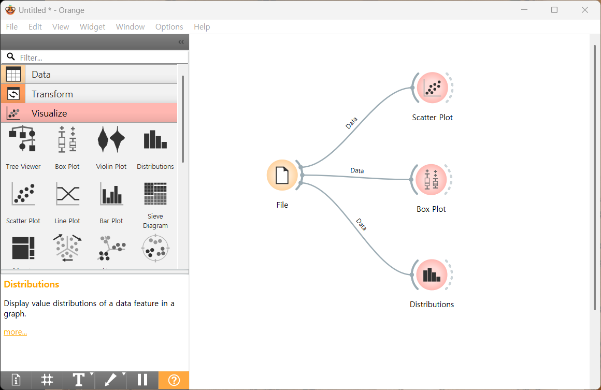
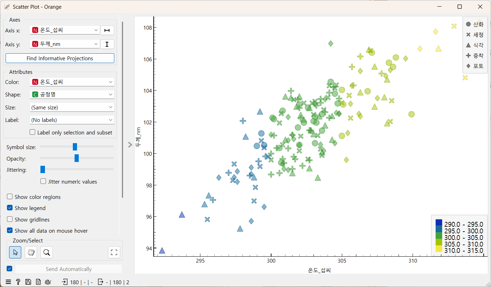
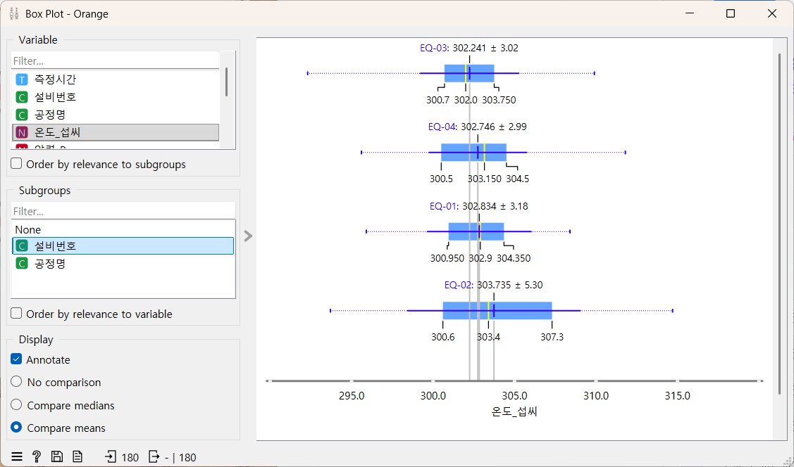
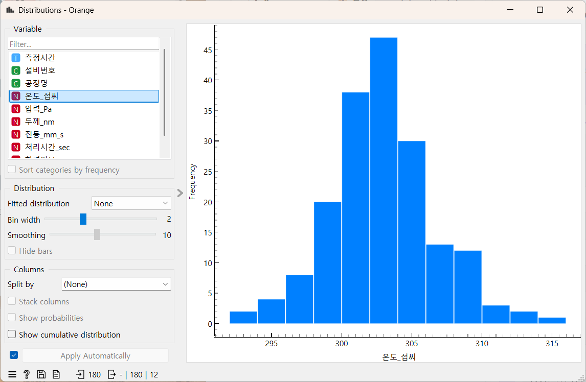
② 파이썬으로 그리기 — 준비
- Matplotlib은 그래프를 그리는 도구로,
plt라고 줄여 부른다.plt.rcParams두 줄은 한글 글꼴 설정이다(Mac은"AppleGothic"). - 그래프 개념은 아이스크림 가게 기록(
ice)으로 익히고, 반도체 데이터는 뒤의 "반도체 데이터로 확인하기"와 실습지에서 다룬다.
import pandas as pd
import matplotlib.pyplot as plt
plt.rcParams["font.family"] = "Malgun Gothic" # 한글 글꼴(Windows)
plt.rcParams["axes.unicode_minus"] = False # 음수 부호 깨짐 방지
ice = pd.read_csv("../../data/weekly/week06/week06_easy_icecream_daily.csv", encoding="utf-8-sig")
ice.head()| 날짜 | 요일 | 날씨 | 최고기온_섭씨 | 판매량_개 | |
|---|---|---|---|---|---|
| 0 | 2024-06-03 | 월 | 맑음 | 23.4 | 71 |
| 1 | 2024-06-04 | 화 | 흐림 | 26.4 | 102 |
| 2 | 2024-06-05 | 수 | 맑음 | 21.3 | 50 |
| 3 | 2024-06-06 | 목 | 맑음 | 25.1 | 88 |
| 4 | 2024-06-07 | 금 | 흐림 | 25.3 | 95 |
글자를 날짜로 바꾸기 — pd.to_datetime()
2024-06-03은 지금 글자일 뿐이다. pd.to_datetime()으로 날짜로 바꿔야 선 그래프 가로축이 날짜 간격대로 그려진다.
ice["날짜"] = pd.to_datetime(ice["날짜"])
ice["날짜"].head(3)0 2024-06-03 1 2024-06-04 2 2024-06-05 Name: 날짜, dtype: datetime64[us]
datetime64가 "날짜로 알아본다"는 표시다. 뒤의 [us]는 저장 단위라 신경 쓰지 않아도 된다(버전에 따라 [ns]).
그래프 코드의 공통 틀
| 줄 | 하는 일 |
|---|---|
plt.그리기명령(가로축 값, 세로축 값) | 그래프를 그린다(plot·bar·hist·scatter). 그래프마다 이 줄만 바뀐다. hist는 값 하나만 넣는다(세로축은 개수가 자동) |
plt.xlabel("…") / plt.ylabel("…") | 가로축 / 세로축 이름 |
plt.show() | 그림을 화면에 보여주고 마무리. plt.show() 전에 다음 그래프를 이어 쓰면 그림이 겹치므로 그래프 하나는 셀 하나에서 그린다 |
그래프 1. 선 그래프 — 시간이 지나며 어떻게 변했나
읽는 법: 가로축 = 시간, 세로축 = 잰 값, 꺾이는 점 하나 = 기록 하나. 흔들림 전체가 조금씩 위(아래)로 가는지를 본다.
plt.plot(ice["날짜"], ice["판매량_개"])
plt.xticks(rotation=45) # 날짜 글자를 45도 기울여 겹치지 않게
plt.xlabel("날짜")
plt.ylabel("판매량_개")
plt.show()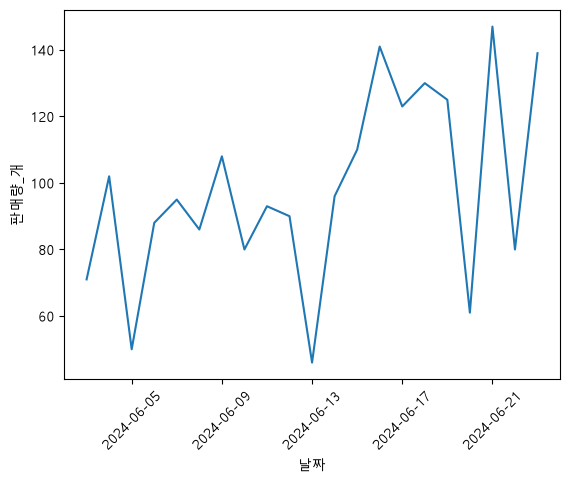
노트북 2단계 실행 결과.
- 들쭉날쭉하면서도 올라간다. 첫 주 평균 85.7개 → 셋째 주 115.0개(강사 계산).
- 뚝 떨어진 6월 13일·20일·22일은
날씨열을 함께 보면 비 온 날이다. 다른 열을 함께 보면 이유의 실마리가 보인다.
그래프 2. 막대그래프 — 그룹마다 몇 건인가
읽는 법: 가로축 = 그룹 이름(순서 없음), 세로축 = 건수, 막대 하나 = 그룹 하나. 막대 높이를 그대로 비교한다.
counts = ice["날씨"].value_counts()
print(counts)
plt.bar(counts.index, counts)
plt.xlabel("날씨")
plt.ylabel("날 수")
plt.show()날씨 맑음 12 흐림 6 비 3 Name: count, dtype: int64
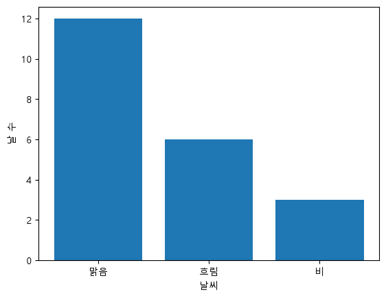
노트북 3단계 실행 결과.
value_counts()는 값마다 몇 건인지 세어 많은 순서로 늘어놓는다.plt.bar(이름들, 숫자들)—counts.index는 막대 이름표,counts는 막대 높이다.
그래프 3. 히스토그램 — 값이 주로 어디에 몰려 있나
읽는 법: 가로축 = 이어진 숫자 구간, 세로축 = 그 구간의 기록 수. bins=5는 최솟값~최댓값을 같은 폭 5칸으로 나누라는 뜻이다.
반 친구 키를 5cm 칸으로 나눠 칸마다 몇 명인지 센 것과 같다.
plt.hist(ice["판매량_개"], bins=5)
plt.xlabel("판매량_개")
plt.ylabel("날 수")
plt.show()노트북 4단계 실행 결과. 46~147개를 한 칸 약 20개로 나눴다.
- 가장 높은 막대는 약 86~107개 칸(6일), 나머지는 3~4일씩이다. 하루에 보통 100개 안팎이 팔렸다.
- 막대그래프 가로축은 이름(순서 바꿔도 됨), 히스토그램 가로축은 숫자 구간(순서 고정)이다.
그래프 4. 산점도 — 두 값이 함께 움직이나
읽는 법: 점 하나 = 기록(행) 하나. 같은 행의 두 값을 가로·세로 위치로 찍고, 점들이 어느 방향으로 기울었는지 본다.
예시 일러스트레이션 · 실제 데이터 아님
산점도에서 볼 세 가지 모양(예시 그림).
plt.scatter(ice["최고기온_섭씨"], ice["판매량_개"])
plt.xlabel("최고기온_섭씨")
plt.ylabel("판매량_개")
plt.show()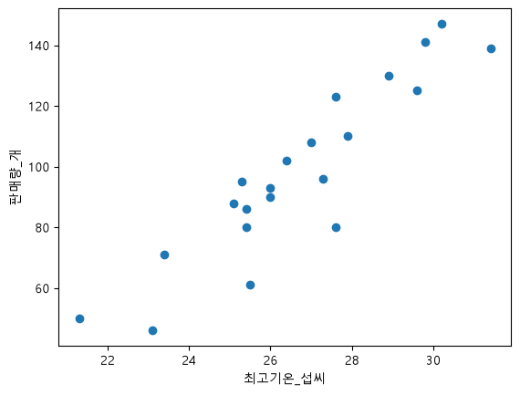
노트북 5단계 실행 결과. 점 하나 = 하루.
- 오른쪽 위로 기운다. 더운 날일수록 많이 팔렸다(25℃ 미만 3일 평균 55.7개, 28℃ 이상 5일 136.4개, 강사 계산).
- "얼마나 강하게" 함께 움직이는지를 숫자로 재는 법은 8차시에 배운다.
그래프 5. 박스플롯 — 그룹마다 얼마나 들쭉날쭉한가
한 그룹의 값을 작은 것부터 한 줄로 세운 뒤 네 토막으로 나눠 상자로 요약한 그림이다.
예시 일러스트레이션 · 실제 데이터 아님
박스플롯 한 개의 각 부분(예시 그림). 상자가 길수록 들쭉날쭉하다. 상자 끝에서 상자 길이의 1.5배보다 멀리 떨어진 값은 동그라미 점으로 따로 찍는다(잘못된 값이라는 뜻은 아니다).
ice.boxplot(column="판매량_개", by="날씨")
plt.show()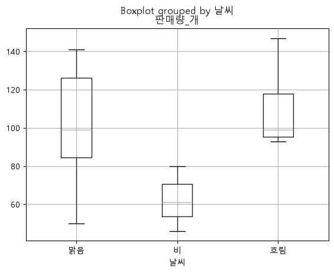
노트북 6단계 실행 결과. "Boxplot grouped by 날씨"는 자동으로 붙는 제목이다.
표.boxplot(column="값을 볼 열", by="그룹을 나눌 열")— 그룹별로 나누는 일까지 한 줄로 한다.- 비 오는 날 상자가 가장 아래, 맑은 날 상자가 가장 길다(선선한 날과 더운 날이 섞임).
숫자로 다시 확인하기
5차시 describe()를 그룹별로 실행한다. groupby는 7차시에 배우므로 오늘은 코드를 그대로 실행하고 결과만 읽는다(반도체 데이터에서도 같다). round(1)은 소수 첫째 자리까지 반올림한다.
print(ice.groupby("날씨")["판매량_개"].describe().round(1))count mean std min 25% 50% 75% max 날씨 맑음 12.0 101.5 28.7 50.0 84.5 99.0 126.2 141.0 비 3.0 62.3 17.0 46.0 53.5 61.0 70.5 80.0 흐림 6.0 109.3 21.5 93.0 95.2 99.0 117.8 147.0
| 열 | 뜻 | 박스플롯에서는 |
|---|---|---|
mean | 평균 | 안 나온다 |
std | 표준편차(퍼짐의 크기) | 상자·수염이 길수록 크다 |
min / max | 가장 작은 값 / 가장 큰 값 | 수염 끝이나 동그라미 점 |
25% / 50% / 75% | 줄 세웠을 때 1/4 / 한가운데 / 3/4 지점 | 상자 아래 끝 / 가운데 선 / 상자 위 끝 |
반도체 데이터로 확인하기
같은 그래프를 반도체 공정 기록(df)에 그려 오늘의 핵심 세 가지만 확인한다. 코드는 쉬운 예제와 같은 모양이고, 표 이름과 열 이름만 바뀐다.
나머지 그래프는 실습지에서 직접 그린다.
df = pd.read_csv("../../data/weekly/week06/week06_process_visualization.csv", encoding="utf-8-sig")
df.head()결과는 180행 표의 앞 5행이다(열은 위 "오늘 쓰는 표 두 개" 표와 같다). 이어서 측정시간을 날짜로 바꾼다.
df["측정시간"] = pd.to_datetime(df["측정시간"])
df["측정시간"].head(3)df["측정시간"].head(3), 노트북 8단계)
0 2024-03-01 05:00:00 1 2024-03-01 17:00:00 2 2024-03-01 19:00:00 Name: 측정시간, dtype: datetime64[us]
확인 1 — 평균 하나로는 안 보이는 시간 변화
질문: 두 달 동안 온도는 같은 수준이었나?
plt.plot(df["측정시간"], df["온도_섭씨"])
plt.xticks(rotation=45) # 날짜 글자를 45도 기울여 겹치지 않게
plt.xlabel("측정시간")
plt.ylabel("온도_섭씨")
plt.show()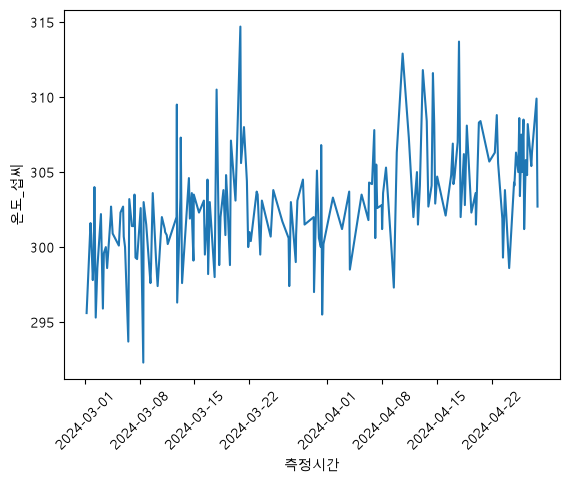
노트북 9단계(실습지 문제 2) 실행 결과.
공장 말로 읽기: 온도가 서서히 올라 3월 104건 평균 301.4℃ → 4월 76건 평균 304.8℃다. 이렇게 값이 시간에 따라 한쪽으로 밀려가는 것을 드리프트라고 한다(오늘 데이터의 드리프트는 연습용으로 넣은 것). 전체 평균 302.8℃ 하나로는 보이지 않는다.
확인 2 — 온도와 함께 움직이는 열은?
질문: 온도가 높은 기록은 두께도 두꺼울까? 압력은?
plt.scatter(df["온도_섭씨"], df["두께_nm"])
plt.xlabel("온도_섭씨")
plt.ylabel("두께_nm")
plt.show()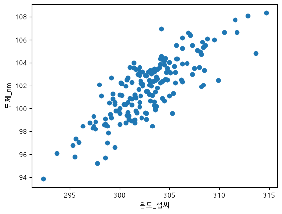
plt.scatter(df["온도_섭씨"], df["압력_Pa"])
plt.xlabel("온도_섭씨")
plt.ylabel("압력_Pa")
plt.show()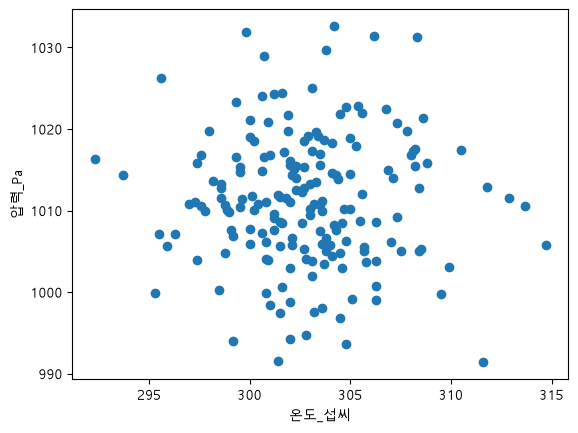
노트북 10단계(실습지 문제 5·6) 실행 결과. 위: 온도-두께, 아래: 온도-압력.
공장 말로 읽기: 온도-두께는 오른쪽 위로 기운다(300℃ 미만 34건 평균 두께 98.6nm, 305℃ 이상 43건 104.4nm). 온도-압력은 둥글게 흩어진다(평균 압력 1011.6과 1011.8). 같은 온도 열도 짝에 따라 다르므로 여러 열을 함께 본다. 온도는 두께의 원인 후보까지만 말할 수 있다.
확인 3 — 어느 설비의 온도가 가장 들쭉날쭉한가?
질문: 평균 온도가 302~304℃로 비슷한 네 설비는 정말 상태가 같을까?
df.boxplot(column="온도_섭씨", by="설비번호")
plt.show()
print(df.groupby("설비번호")["온도_섭씨"].describe().round(1))count mean std min 25% 50% 75% max 설비번호 EQ-01 47.0 302.8 3.2 295.9 301.0 302.9 304.4 308.4 EQ-02 37.0 303.7 5.4 293.7 300.6 303.4 307.3 314.7 EQ-03 46.0 302.2 3.1 292.3 300.7 302.0 303.8 309.9 EQ-04 50.0 302.7 3.0 295.6 300.4 303.2 304.5 311.8
공장 말로 읽기: 평균은 302.2~303.7℃로 비슷하지만 EQ-02는 상자 길이 6.7℃(300.6~307.3℃), 표준편차 5.4로 가장 들쭉날쭉하다 (다른 설비 상자 길이 3.1~4.1℃, std 3.0~3.2). Orange3와 같은 결론이다. EQ-02를 먼저 더 살펴볼 만하지만, 이유는 그림만으로 단정하지 않는다.
실습: 그래프 다섯 가지 따라 그리기
week06_student.ipynb를 위에서 아래로 실행한다. 1~7단계는 쉬운 예제(실행만), 8~11단계는 실습지 문제 1~8(____ 채우기)이다.
핵심 용어 카드
선 그래프
- 한 줄 설명
- 시간 순서대로 값을 이어 변화를 보여주는 그래프.
- 데이터에서의 예
plt.plot(df["측정시간"], df["온도_섭씨"])
막대그래프
- 한 줄 설명
- 그룹(이름)마다 건수를 막대 높이로 비교하는 그래프.
- 데이터에서의 예
plt.bar(counts.index, counts)
히스토그램
- 한 줄 설명
- 숫자 범위를 같은 폭의 칸(bin)으로 나눠 칸마다 몇 개인지 보여주는 그래프.
- 데이터에서의 예
plt.hist(df["온도_섭씨"], bins=10)
산점도
- 한 줄 설명
- 같은 행의 두 숫자를 점 하나로 찍어 함께 움직이는지 보는 그래프.
- 데이터에서의 예
plt.scatter(df["온도_섭씨"], df["두께_nm"])
박스플롯
- 한 줄 설명
- 그룹마다 값을 상자·가운데 선·수염·점으로 요약한 그래프.
- 데이터에서의 예
df.boxplot(column="온도_섭씨", by="설비번호")
중앙값
- 한 줄 설명
- 줄 세웠을 때 한가운데 값. 박스플롯의 가운데 선.
- 데이터에서의 예
- EQ-02 온도 중앙값 303.4℃(
50%)
퍼짐(변동)
- 한 줄 설명
- 값이 얼마나 들쭉날쭉한지. 숫자로는 표준편차(
std). - 데이터에서의 예
- EQ-02 온도 std 5.4, 다른 설비 3.0~3.2
드리프트
- 한 줄 설명
- 시간이 지나며 값이 한쪽으로 서서히 밀려가는 현상.
- 데이터에서의 예
- 3월 평균 301.4℃ → 4월 평균 304.8℃
데이터
- 쉬운 예제:
data/weekly/week06/week06_easy_icecream_daily.csv(21행 5열). 생활 예제용 가상 데이터다. - 반도체:
data/weekly/week06/week06_process_visualization.csv(180행 10열, 설비 4대). 교육용 가상 데이터로, 드리프트·EQ-02 퍼짐·온도-두께 경향을 연습용으로 일부러 넣었다. 온도·압력 값의 크기는 해석하지 않는다. - 자세한 설명: 데이터 설명서
주의할 점 & 자주 발생하는 오류
UserWarning: Glyph 50728 (\N{HANGUL SYLLABLE ON}) missing from font(s) DejaVu Sans. — 글꼴 설정 두 줄을 실행하지 않았다.
노트북 1단계 첫 셀을 다시 실행한다(Mac은 "AppleGothic").
KeyError: 'Column not found: 온도',KeyError: '설비'— 열 이름을 줄여 썼다(온도_섭씨,설비번호).KeyError: '날짜'— 실습지 문제에서 쉬운 예제를 바꿔 쓰며 표 이름만df로 바꾸고 열 이름(날짜→측정시간)은 그대로 뒀다.
TypeError: scatter() missing 1 required positional argument: 'y',
TypeError: bar() missing 1 required positional argument: 'height' —
plt.scatter(df["온도_섭씨"], df["두께_nm"]), plt.bar(counts.index, counts)처럼 두 개를 넣는다.
pd.to_datetime()을 건너뛰면 가로축 날짜 글자가 겹친다. 한 셀에 그래프 두 개를 쓰면 그림이 겹친다.- 축 이름 줄을 안 바꾸면 온도 그래프에 "판매량_개" 같은 축 이름이 붙는다.
결과 정리 & 퀴즈
더 많은 문제는 실습지에 있다.
ice.boxplot(column="판매량_개", by="날씨")를 반도체 데이터의 설비별 온도 박스플롯으로 바꾼 것은?std)은 맑은 날이 28.7로 가장 크다.AI로 한 걸음 더 — 질문하고 코드 받아보기
- "박스플롯의 상자, 가운데 선, 수염, 동그라미 점이 각각 무엇을 뜻하는지 반 친구들 키에 비유해서 설명해줘."
- "히스토그램과 막대그래프는 어떻게 다른가요? x축의 차이를 중심으로 설명해줘."
- "두 값이 함께 움직이는데 원인은 아닌 생활 속 예를 3개만 알려줘."
df.boxplot(column="온도_섭씨", by="설비번호"))에,
정상 범위 295도와 305도를 빨간 점선 가로줄로 표시하는 코드를 만들어줘." (295~305℃는 학습용 정상 범위)
df.boxplot(column="온도_섭씨", by="설비번호")
plt.axhline(295, color="red", linestyle="--") # 정상 범위 아래 끝
plt.axhline(305, color="red", linestyle="--") # 정상 범위 위 끝
plt.show()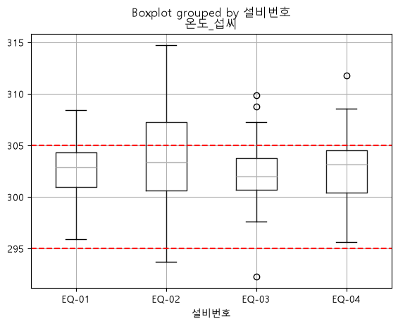
노트북 13단계 실행 결과. EQ-02의 상자 위 끝(307.3℃)만 305℃ 점선을 넘어간다.
- 직접 실행해서 기대한 그림인지 확인한다.
plt.axhline(가로줄 긋기)은 구경만 한다. - 노트북 8단계에서
df를 먼저 만들어 둬야 실행된다.
과제(다음 차시까지)
노트북 하나에 그래프와 해석 한 문장씩을 적어 제출한다.
처리시간_sec 히스토그램을 그리고, 주로 몇 초 근처에 몰려 있는지 적는다.
공정명별 건수를 value_counts()로 세어 막대그래프로 그리고, 가장 많은·적은 공정을 적는다.
두께_nm, 세로축 진동_mm_s 산점도가 세 가지 모양 중 어디에 가까운지 적는다.
핵심 질문 → 데이터 연결
- 질문: 어느 설비의 온도 변동이 가장 큰가? Orange3와 Matplotlib에서 같은 결론이 나오는가?
- 답: EQ-02다. 두 도구 모두 EQ-02 상자가 가장 길고, 숫자 요약도 상자 길이 6.7℃, 표준편차 5.4로 가장 크다. 평균(302~304℃)만 봤다면 놓쳤을 차이다.
다음 차시 예고
groupby로 설비별 평균·합격률을 직접 계산한다. 기록 수가 다른 설비(EQ-04 50건, EQ-02 37건)끼리는 건수가 아니라 비율로 비교한다.